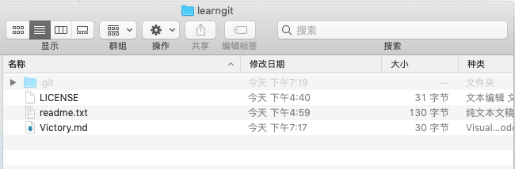
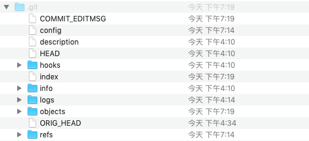
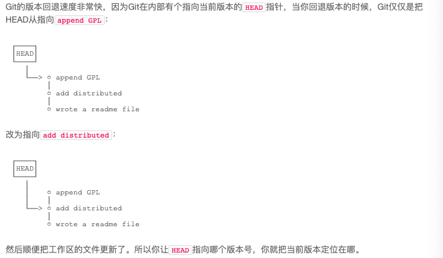
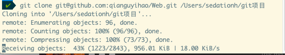

Git简介
Git
用C写的分布式版本控制系统
分布式版本控制系统
每个人都是一个完整的版本库，现实场景下为了方便大家的交换大家的修改，有一个中央服务器的电脑，但如果这服务器崩了，找一个最新的本地代码同步上去即可，之前所有的提交历史记录都可以看到
工作区和暂存区
工作区就是我们正常写文件的地方，比如图中建立了一个名为learngit的文件夹，并用git对其进行管理

其中，除了隐藏文件夹 .git 以外的文件或者文件夹，都属于工作区
.git文件，是git的版本库(Repository),其目录结构如下图所示

git的的版本库中存了很多东西，最重要的称为stage（或者叫index）的缓存区，还有git为我们自动创建的第一个分支master
我们往git的版本库中添加文件，有两个执行步骤
- git add把文件添加进去，实际上是把文件修改增添到缓存区
- git commit提交更改，实际上就是把我们暂存区的所有内容提交到当前分支
因为我们创建git版本库时，git自动为我们创建了唯一一个master分支，所以，现在，git commit就是往master分支上提交更改
版本管理相关操作
创建版本库
在所要管理的文件夹中
#版本库初始化 |
版本管理
#查看当前仓库的状态 |

git reflog |
修改管理
git checkout -- file_name |
此命令的意思是，把文件在工作区的修改全部撤销掉，这里有两种情况
没有add添加到暂存区，那么撤销修改就回到当前版本库中的状态
已经add到暂存区，那么，撤销修改就回到暂存区中的状态
总之
- 操作撤回对象是工作区的文件
- 回到最近一次commit or add 的状态
git reset HEAD file_name |
git reset命令既可以回退版本，也可以把暂存区的修改回退到工作区，HEAR表示最新版本
这种方法针对于add后没有submit的情况，把暂存区的修改撤销掉，但是工作区的修改仍然存在，现在要丢掉工作区的修改
git checkout -- file_name |
删除管理
删除了工作区的文件，此时与版本库不一致，此时你有两个选择，
1.确实要从版本库汇总删除该文件
rm file_name |
2.删除错了,进行恢复
git checkout -- file_name |
远程仓库
添加远程仓库
目的：实现远程仓库备份和多人协作
github上新建一个Repository,利用其ssh
git remote add origin repo_ssh |
添加后，远程仓库的名字就是origin,这是约定俗成的，不强制
下一步，就可以把本地库的所有内容推送到远程库上
git push -u origin master |
把本地仓库推送到远程,用git push命令，相当于把当前分支master推送到远程。
由于远程是空的，我们第一次推送分支时，加了 -u 参数，这样远程和本地就建立了关联，为以后的推送或者拉取简化命令
git push origin master |
从远程仓库克隆
很简单，在网页中复制ssh
git clone 复制的ssh |
如果想clone到指定目录
git clone 复制的ssh 指定目录 |
如下图
